Plantin establishes a business as a
P r i n t e r
In 1555, Plantin set up as a printer. He may have initially obtained financial support from the heterodox sect known as the ‘Huis der Liefde’ (‘House of Love’), and later – from 1563 onwards – from Calvinist partners. With this support he developed his business into the largest typographical undertaking of the second half of the 16th century.
Plantin suspected of
hersey
The second half of the 16th century was no easy time for writers and their printer-publishers. Religious intolerance was rife. The Southern Netherlands were under Spanish control, so Roman Catholicism was imposed. In 1562, Plantin got into trouble when a Calvinist pamphlet was discovered during a raid on his print shop. The bad news reached Plantin while he was on a business trip. To escape persecution, he remained in Paris for a year and a half until his name was cleared. In September 1563, he returned to Antwerp, where all his furniture had in the meantime been sold to the public. But presumably the creditors/wholesale buyers were friends of Plantin, who managed to ensure that the government did not impound his property. They subsequently became his partners.
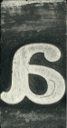
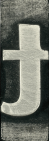
Did you know:
r i s e
Plantin's Unstoppable
Back in Antwerp, Plantin received the support of some wealthy local financiers, who saw the energetic entrepreneur as a sound investment. The Officina Plantiniana, which had already moved several times due to lack of space, became a ‘compagnie’. Over a period of five years, the presses, which Plantin purchased second-hand, printed some 260 publications.
1563
!
Back in danger
This collaboration came to an end in 1567. Plantin’s partners, who were convinced Calvinists, fled the Netherlands just before the arrival of the Duke of Alba. But the real danger to Plantin lay in Vianen, near Utrecht. In this Calvinist stronghold, Plantin secretly helped to establish an anti-Spanish printing works. This act of high treason could have cost him his head.
help him escape
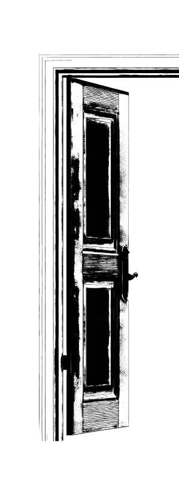
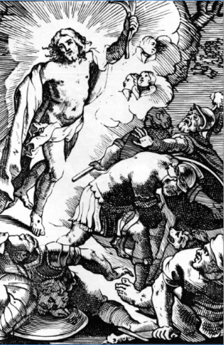
The polyglot Bible
To clear himself of all suspicion, Plantin sang the praises of the Catholic Church in letters to powerful protectors in this period. He developed a plan that he suspected would be of interest to the ultra-Catholic King Philip II: a scholarly edition of the Biblical texts that would be the largest polyglot (multilingual) Bible of the 16th century.
The plan worked: in September 1567, Plantin learned that Philip II was willing to provide financial support. In March 1568, the king sent the great Spanish theologian and humanist Benedictus Arias Montanus to Antwerp to oversee the publication. Five years later, in 1573, the giant project was completed: an edition of the Bible in five languages and eight monumental volumes... a truly ‘royal’ Bible or Biblia regia.
explore
the collection
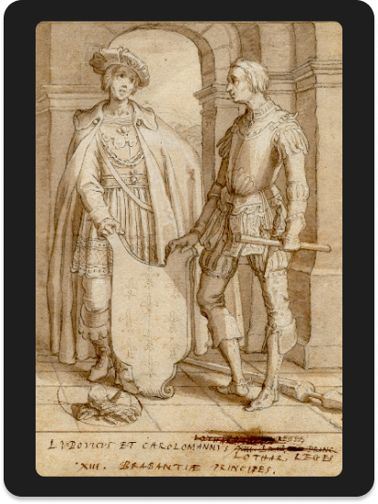
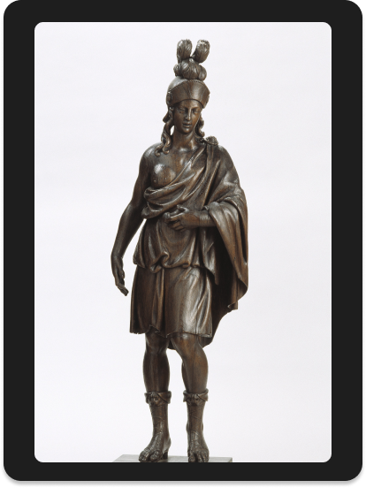
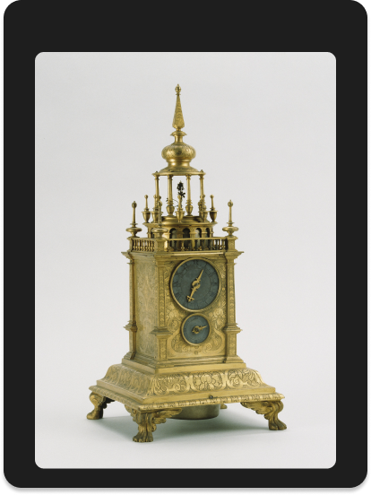
"
Arch-printer to the king of Spain
The largest printing business of the age brought its printer an honorary title in 1570, while work was still in progress on the Biblia regia: Arch-Printer to the King. Aristocratic associates also secured lucrative contracts for him in 1571 for the printing of missals, breviaries and other religious mass products for the Spanish market and its colonies.
"
Search things from plantin’s room
parchment
painting
find the room in the museum
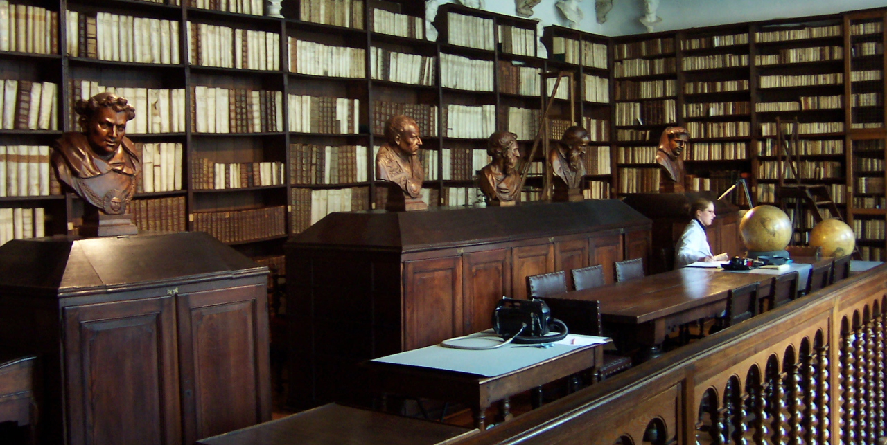
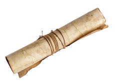
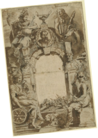
What are the next stories?
Christoffel Plantin
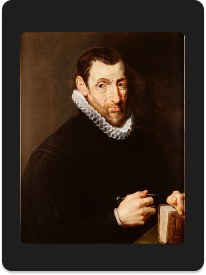
Jan Moretus
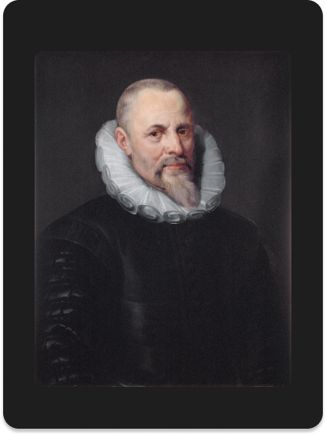
Balthasar Moretus
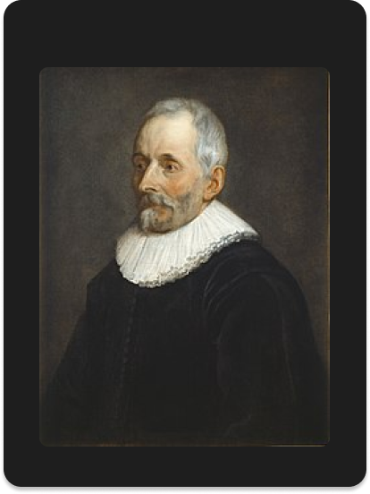
Edward Moretus
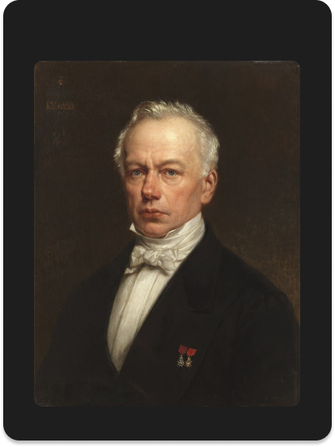
Peter Paul Rubens
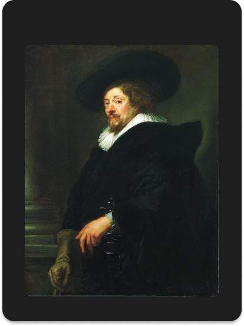